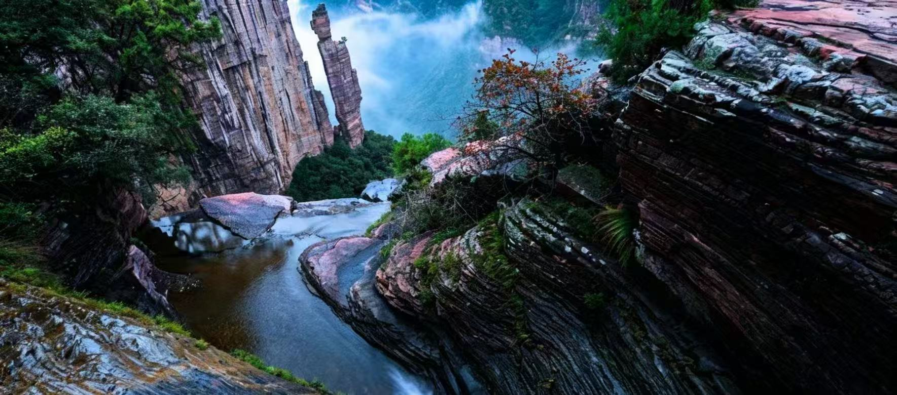
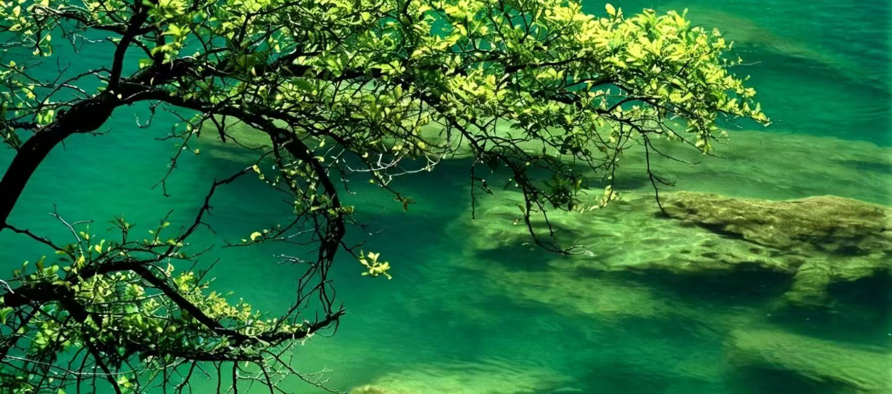

八里沟位于河南省新乡市辉县市，是国家5A级旅游景区、国家猕猴自然保护区，素有“北方水世界”“太行猕猴乐园”之美誉。景区地处太行山腹地，集奇山、秀水、绝壁、瀑布、峡谷于一体，拥有典型的北方峡谷风光和丰富的生态资源。
景区由八里沟、天界山、关山三大片区组成，核心景观“天河瀑布”落差高达180米，气势磅礴。这里四季分明，水景奇观丰富，既有太行山脉的雄伟险峻，又有江南水乡的清幽雅致，是避暑观光、休闲度假、生态研学的绝佳之地。

📍 地址：河南省新乡市辉县市上八里镇八里沟景区
🎫 门票：成人通票含各大片区；学生凭学生证半价；60岁以上老人、1.4米以下儿童、现役军人、残疾人等凭证免门票
⏰ 开放时间
旺季（4月—10月）07:00-18:00；淡季（11月—3月）08:00-17:00，全年开放
🚗 交通指南
🍜 当地特色美食
经典一日游：景区入口 → 观光车 → 猕猴谷 → 一线泉 → 天河瀑布 → 绝壁天梯 → 返程。
深度两日游：Day1 八里沟核心水景、瀑布观光；Day2 天界山登山、玉皇宫祈福。
1. 景区水景较多，部分路段湿滑，务必穿防滑鞋，注意脚下安全。
2. 猕猴谷有野生猕猴，请勿随意投喂或触摸，避免被抓伤。
3. 夏季防晒、春秋保暖，山区温差较大，出行建议备一件外套。
4. 节假日人流量较大，建议提前线上购票，错峰入园提升体验。
5. 徒步路段较多，体力一般建议乘坐观光车和绝壁天梯，省力舒适。
6. 登山过程中注意环保，不乱扔垃圾，保护太行生态环境。
春季（4月—5月）山花盛开，溪水潺潺，踏青观光绝佳；夏季（6月—8月）水量充沛，瀑布壮观，是天然的避暑胜地；秋季（9月—11月）层林尽染，空气清新，登山观景视野极佳；冬季（12月—3月）冰挂雪瀑，晶莹剔透，适合冬季徒步赏景。